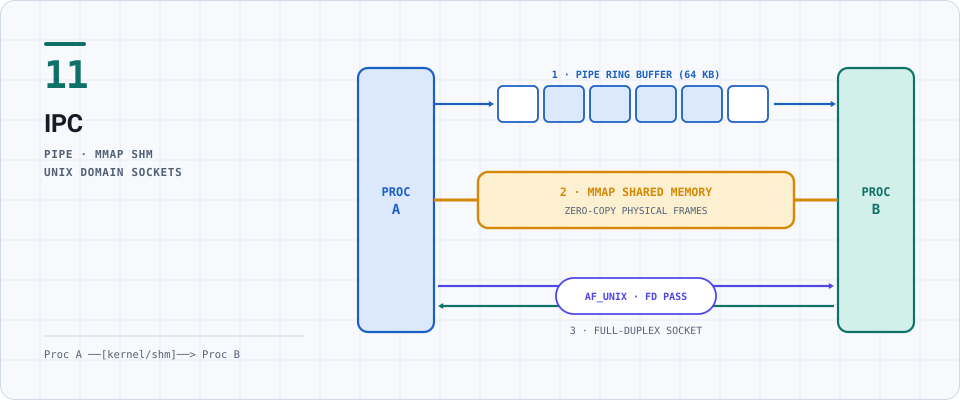

11. Inter-Process Communication (IPC)

While threads within a single process share an address space and coordinate directly through memory and synchronization primitives, processes are isolated by hardware page tables. Inter-Process Communication (IPC) provides controlled kernel-mediated channels through which isolated processes exchange data and synchronize execution without sacrificing memory protection.
11.1 Unidirectional Byte Streams: Pipes
A pipe is a unidirectional, kernel-resident ring buffer (typically 64 KiB on Linux and 16 to 64 KiB on macOS) exposed to user space as a pair of ordinary file descriptors. Because file descriptors are inherited across fork(), a parent process can create a pipe before forking and establish an immediate communication channel with its child (Figure 11-1).
11.1.1 The pipe System Call Interface and Stream Semantics
int pipe(int pipefd[2]);
ssize_t read(int fd, void *buf, size_t count);
ssize_t write(int fd, const void *buf, size_t count);
int close(int fd);
Calling pipe(pipefd) allocates a single kernel pipe buffer and populates pipefd with two newly opened file descriptors: pipefd[0] is the read end (writing to it fails with EBADF), and pipefd[1] is the write end (reading from it fails with EBADF). It returns 0 on success or -1 on failure (EMFILE, ENFILE, or EFAULT).
On the read end, read(fd, buf, count) copies up to count available bytes from the kernel ring buffer into buf, returning immediately with 1 <= n <= count whenever data is present. If the buffer is empty and at least one open write descriptor still exists, read() blocks until data arrives or all writers close; once zero open write descriptors remain system-wide, read() returns 0, signaling End-of-File (EOF). On the write end, write(fd, buf, count) copies bytes into the ring buffer, blocking when the buffer is full. The Portable Operating System Interface (POSIX) standard guarantees that writes of at most PIPE_BUF bytes (minimum 512 bytes; 4,096 bytes on Linux and macOS) are atomic, preventing concurrent writers from interleaving bytes mid-write. If zero open read descriptors remain, the kernel refuses the write, delivers Broken Pipe (SIGPIPE) (whose default action terminates the process), and returns -1 with errno = EPIPE if SIGPIPE is caught or ignored.
Three operational invariants prevent classic pipe bugs. First, both parent and child must close their unused ends immediately after fork(): because fork() duplicates both descriptors, the reference count on each end becomes 2; if the parent forgets to close pipefd[1], the writer reference count never drops to zero even after the child exits, causing the parent’s read() to block forever instead of observing EOF. Second, multi-kilobyte workloads must loop over partial read() and write() transfers. Third, because pipes are First-In, First-Out (FIFO) raw byte streams that do not preserve write boundaries (two consecutive 10-byte writes may be returned by one 20-byte read()), structured protocols must layer explicit message framing such as a length prefix or newline delimiter.

Listing 11-1. One pipe, one fork, and one message (C++20). (code/ch11/pipe.cpp)
// ch11/pipe.cpp: one pipe, one fork, one message from child to parent.
#include <sys/wait.h>
#include <unistd.h>
#include <cstdio>
#include <cstring>
int main() {
int fds[2];
if (pipe(fds) != 0) {
perror("pipe");
return 1;
}
pid_t pid = fork();
if (pid == 0) {
close(fds[0]); // child keeps the write end
const char* msg = "hello from child";
write(fds[1], msg, strlen(msg));
close(fds[1]);
_exit(0);
}
close(fds[1]); // parent keeps the read end
char buf[64] = {};
ssize_t n = read(fds[0], buf, sizeof buf - 1);
waitpid(pid, nullptr, 0);
printf("parent read %zd bytes: \"%s\"\n", n, buf);
}
Output 11-1.
parent read 16 bytes: "hello from child"
Listing 11-2. The same program in Rust. (code/ch11/pipe.rs)
// ch11/pipe.rs: the same pipe between parent and child in Rust.
use std::error::Error;
use std::io;
use std::ptr;
use std::str;
fn main() -> Result<(), Box<dyn Error>> {
let mut fds = [0; 2];
// SAFETY:
// 1. `pipe(2)` receives a valid mutable pointer to an array of two `c_int`s.
// 2. Concurrency Safety: Process is single-threaded at `fork()`, ensuring child inherits
// an uncorrupted address space.
// 3. Pipe Lifecycle Proof: The pipe inode ref-count is incremented upon `fork()`.
// The child closes its unused read end (`fds[0]`), while the parent closes its unused write
// end (`fds[1]`). When the child terminates, its write end is closed, reducing the writer
// ref-count to zero. This allows the parent's `read(2)` to encounter EOF (0 bytes) rather
// than hanging forever in an unblocked sleep.
unsafe {
if libc::pipe(fds.as_mut_ptr()) != 0 {
return Err(io::Error::last_os_error().into());
}
let pid = libc::fork();
if pid < 0 {
return Err(io::Error::last_os_error().into());
}
if pid == 0 {
libc::close(fds[0]); // child keeps the write end
let msg = b"hello from child";
libc::write(fds[1], msg.as_ptr() as *const libc::c_void, msg.len());
libc::close(fds[1]);
libc::_exit(0);
}
libc::close(fds[1]); // parent keeps the read end
let mut buf = [0u8; 64];
let n = libc::read(fds[0], buf.as_mut_ptr() as *mut libc::c_void, buf.len() - 1);
libc::waitpid(pid, ptr::null_mut(), 0);
if n < 0 {
return Err(io::Error::last_os_error().into());
}
let s = str::from_utf8(&buf[..n as usize])?;
println!("parent read {n} bytes: \"{s}\"");
}
Ok(())
}Output 11-2.
parent read 16 bytes: "hello from child"
11.2 Zero-Copy Communication: Shared Memory
Every byte transmitted through a pipe or socket traverses the kernel twice: once via copy_from_user into the kernel ring buffer during write(), and a second time via copy_to_user into the receiver’s buffer during read(). For high-throughput workloads such as database buffer pools, video pipelines, and telemetry rings, shared memory eliminates both copies by mapping the exact same physical Random-Access Memory (RAM) frames into the page tables of multiple processes simultaneously (Figure 11-2). Once mapped, stores executed by one process become visible to peer processes at hardware cache-coherency speeds with zero system calls.
11.2.1 MAP_SHARED Mappings and Process-Shared Mutex Attributes
Removing kernel buffering shifts synchronization and failure-recovery responsibility entirely onto the application: concurrent processes mutating a shared region face the exact same read-modify-write atomicity gap as threads (Chapter 4), and if a peer crashes while holding a shared lock without PTHREAD_MUTEX_ROBUST recovery, sibling processes can hang indefinitely. Listings 11-3 and 11-4 place both a pthread_mutex_t and a 64-bit counter inside one shared virtual page:
void *mmap(void *addr, size_t length, int prot, int flags, int fd, off_t offset);
int pthread_mutexattr_init(pthread_mutexattr_t *attr);
int pthread_mutexattr_setpshared(pthread_mutexattr_t *attr, int pshared);
int pthread_mutex_init(pthread_mutex_t *mutex, const pthread_mutexattr_t *attr);
int pthread_mutex_destroy(pthread_mutex_t *mutex);
Both MAP_SHARED | MAP_ANON and MAP_PRIVATE | MAP_ANON allocate zero-initialized anonymous memory (fd = -1, offset = 0, prot = PROT_READ | PROT_WRITE), but they diverge across fork(). Under MAP_PRIVATE, the kernel marks both parent and child Page Table Entries (PTEs) read-only and performs Copy-on-Write (COW) on the first store, splitting them onto isolated frames. Under MAP_SHARED, both processes’ PTEs continue pointing to the identical writable physical frame, establishing true zero-copy shared memory. (For unrelated processes lacking a fork() ancestor, POSIX provides shm_open() plus ftruncate() to obtain a shared descriptor passed as fd to mmap().)
By default, a pthread_mutex_t initialized with nullptr attributes uses PTHREAD_PROCESS_PRIVATE, allowing the runtime to key its futex wait queue strictly on the calling process’s virtual address (FUTEX_PRIVATE_FLAG on Linux). Locking a private mutex across distinct processes produces undefined behavior because their wait queues do not match. Calling pthread_mutexattr_init(&attr) followed by pthread_mutexattr_setpshared(&attr, PTHREAD_PROCESS_SHARED) configures pthread_mutex_init(&s->mu, &attr) to hash futex wait queues on the underlying physical memory object. Each pthread_* function returns 0 on success or a positive POSIX error code directly (without setting errno). Once waitpid() confirms the child has exited, the parent invokes pthread_mutex_destroy(&s->mu) and munmap(s, sizeof(Shared)).

Listing 11-3. A counter in shared memory, protected by a process-shared mutex (C++20). (code/ch11/shm_counter.cpp)
// ch11/shm_counter.cpp: a counter in shared memory, guarded by a
// process-shared mutex. Parent and child each add half a million.
#include <sys/mman.h>
#include <sys/wait.h>
#include <unistd.h>
#include <pthread.h>
#include <cstdint>
#include <cstdio>
struct Shared {
pthread_mutex_t mu;
uint64_t counter;
};
int main() {
constexpr uint64_t kIters = 500'000;
Shared* s = static_cast<Shared*>(mmap(nullptr, sizeof(Shared),
PROT_READ | PROT_WRITE,
MAP_SHARED | MAP_ANON, -1, 0));
if (s == MAP_FAILED) {
perror("mmap");
return 1;
}
pthread_mutexattr_t attr;
pthread_mutexattr_init(&attr);
pthread_mutexattr_setpshared(&attr, PTHREAD_PROCESS_SHARED);
pthread_mutex_init(&s->mu, &attr);
s->counter = 0;
pid_t pid = fork();
if (pid == 0) {
for (uint64_t i = 0; i < kIters; ++i) {
pthread_mutex_lock(&s->mu);
++s->counter;
pthread_mutex_unlock(&s->mu);
}
_exit(0);
}
for (uint64_t i = 0; i < kIters; ++i) {
pthread_mutex_lock(&s->mu);
++s->counter;
pthread_mutex_unlock(&s->mu);
}
waitpid(pid, nullptr, 0);
printf("expected %llu, observed %llu\n",
static_cast<unsigned long long>(2 * kIters),
static_cast<unsigned long long>(s->counter));
pthread_mutex_destroy(&s->mu);
munmap(s, sizeof(Shared));
}
Output 11-3. The counter reaches exactly 1,000,000.
expected 1000000, observed 1000000
Listing 11-4. The same process-shared mutex counter in Rust. (code/ch11/shm_counter.rs)
// ch11/shm_counter.rs: a counter in shared memory, guarded by a
// process-shared mutex. Parent and child each add half a million.
extern crate libc;
use std::mem::{MaybeUninit, size_of};
use std::ptr;
#[repr(C)]
struct Shared {
mu: libc::pthread_mutex_t,
counter: u64,
}
fn main() {
const ITERS: u64 = 500_000;
// SAFETY: `MAP_SHARED | MAP_ANON` allocates page-aligned shared physical memory
// inherited across `fork()`. Checked against `MAP_FAILED` before dereferencing.
let raw = unsafe {
libc::mmap(
ptr::null_mut(),
size_of::<Shared>(),
libc::PROT_READ | libc::PROT_WRITE,
libc::MAP_SHARED | libc::MAP_ANON,
-1,
0,
)
};
assert_ne!(raw, libc::MAP_FAILED, "mmap failed");
let s = raw as *mut Shared;
// SAFETY: `s` points to writable page-aligned memory of at least `size_of::<Shared>()`.
// Configuring `PTHREAD_PROCESS_SHARED` permits synchronization across forked processes.
unsafe {
let mut attr = MaybeUninit::<libc::pthread_mutexattr_t>::zeroed().assume_init();
libc::pthread_mutexattr_init(&mut attr);
libc::pthread_mutexattr_setpshared(&mut attr, libc::PTHREAD_PROCESS_SHARED);
libc::pthread_mutex_init(ptr::addr_of_mut!((*s).mu), &attr);
libc::pthread_mutexattr_destroy(&mut attr);
ptr::addr_of_mut!((*s).counter).write(0);
}
// SAFETY: Shared mutex and counter are initialized before `fork()`.
let pid = unsafe { libc::fork() };
assert!(pid >= 0, "fork failed");
if pid == 0 {
// SAFETY: All accesses to `(*s).counter` occur while holding the process-shared
// pthread mutex `(*s).mu`, preventing data races between parent and child.
unsafe {
for _ in 0..ITERS {
libc::pthread_mutex_lock(ptr::addr_of_mut!((*s).mu));
let cur = ptr::addr_of!((*s).counter).read();
ptr::addr_of_mut!((*s).counter).write(cur + 1);
libc::pthread_mutex_unlock(ptr::addr_of_mut!((*s).mu));
}
libc::_exit(0);
}
}
// SAFETY: Parent increments `(*s).counter` under the same process-shared mutex,
// waits for child termination via `waitpid`, and then cleans up the shared mapping.
unsafe {
for _ in 0..ITERS {
libc::pthread_mutex_lock(ptr::addr_of_mut!((*s).mu));
let cur = ptr::addr_of!((*s).counter).read();
ptr::addr_of_mut!((*s).counter).write(cur + 1);
libc::pthread_mutex_unlock(ptr::addr_of_mut!((*s).mu));
}
libc::waitpid(pid, ptr::null_mut(), 0);
let observed = ptr::addr_of!((*s).counter).read();
println!("expected {}, observed {observed}", 2 * ITERS);
libc::pthread_mutex_destroy(ptr::addr_of_mut!((*s).mu));
libc::munmap(raw, size_of::<Shared>());
}
}Output 11-4.
expected 1000000, observed 1000000
11.3 Bidirectional Channels: Socket Pairs
A pipe supports data flow in only one direction; implementing request-response communication with pipes requires two separate pipes and careful descriptor management to avoid deadlock. A socket pair provides a single full-duplex (bidirectional) local channel between related processes, backed by two independent kernel send/receive buffers so both peers can transmit and receive simultaneously.
11.3.1 The socketpair System Call Interface
int socketpair(int domain, int type, int protocol, int sv[2]);
Calling socketpair(AF_UNIX, SOCK_STREAM, 0, sv) creates a pre-connected pair of symmetric local descriptors in sv[0] and sv[1], returning 0 on success or -1 on error (EAFNOSUPPORT, EOPNOTSUPP, EMFILE, EFAULT). The AF_UNIX (AF_LOCAL) domain routes traffic strictly through local kernel memory without Internet Protocol (IP) headers, checksums, or network interfaces, while SOCK_STREAM delivers a reliable, ordered byte stream analogous to a Transmission Control Protocol (TCP) connection (passing SOCK_DGRAM or SOCK_SEQPACKET preserves explicit message boundaries; protocol = 0 selects the domain default). Unlike pipe(), either endpoint can both read and write: after fork(), the child closes sv[0] and keeps sv[1], while the parent closes sv[1] and keeps sv[0]. Beyond byte streams, AF_UNIX socket pairs can transfer live open file descriptors across process boundaries via sendmsg() and recvmsg() with SCM_RIGHTS ancillary control messages, enabling privilege-separated browser and sandbox architectures where a broker process opens files on behalf of an untrusted worker.
Listing 11-5. A two-way channel between parent and child (C++20). (code/ch11/socketpair.cpp)
// ch11/socketpair.cpp: a socketpair: one bidirectional channel, two directions.
#include <sys/socket.h>
#include <sys/wait.h>
#include <unistd.h>
#include <cstdio>
#include <cstring>
int main() {
int sv[2];
if (socketpair(AF_UNIX, SOCK_STREAM, 0, sv) != 0) {
perror("socketpair");
return 1;
}
pid_t pid = fork();
if (pid == 0) {
close(sv[0]);
const char* msg = "ping from child";
write(sv[1], msg, strlen(msg));
char buf[64] = {};
read(sv[1], buf, sizeof buf - 1);
printf("child received: \"%s\"\n", buf);
fflush(stdout);
_exit(0);
}
close(sv[1]);
char buf[64] = {};
read(sv[0], buf, sizeof buf - 1);
printf("parent received: \"%s\"\n", buf);
const char* reply = "pong from parent";
write(sv[0], reply, strlen(reply));
waitpid(pid, nullptr, 0);
}
Output 11-5. Each process sends one message and receives the other.
child received: "pong from parent"
parent received: "ping from child"
Listing 11-6. The same bidirectional socketpair in Rust. (code/ch11/socketpair.rs)
// ch11/socketpair.rs: a socketpair: one bidirectional channel, two directions.
extern crate libc;
use std::io::{self, Write};
use std::ptr;
use std::str;
fn main() {
let mut sv = [0 as libc::c_int; 2];
// SAFETY: `sv` is a valid 2-element `c_int` array populated by `socketpair`.
let rc = unsafe { libc::socketpair(libc::AF_UNIX, libc::SOCK_STREAM, 0, sv.as_mut_ptr()) };
assert_eq!(rc, 0, "socketpair failed");
let _ = io::stdout().flush();
// SAFETY: Stdio is flushed prior to `fork()`.
let pid = unsafe { libc::fork() };
assert!(pid >= 0, "fork failed");
if pid == 0 {
// SAFETY: Child closes parent descriptor `sv[0]`, exchanges messages on `sv[1]`,
// flushes output, and terminates via `_exit(0)`.
unsafe {
libc::close(sv[0]);
let msg = b"ping from child";
libc::write(sv[1], msg.as_ptr() as *const libc::c_void, msg.len());
let mut buf = [0_u8; 64];
let n = libc::read(sv[1], buf.as_mut_ptr() as *mut libc::c_void, buf.len() - 1);
let text = str::from_utf8(&buf[..n.max(0) as usize]).unwrap_or("");
println!("child received: \"{text}\"");
let _ = io::stdout().flush();
libc::close(sv[1]);
libc::_exit(0);
}
}
// SAFETY: Parent closes child descriptor `sv[1]`, reads request from `sv[0]`,
// writes reply, and reaps the child process.
unsafe {
libc::close(sv[1]);
let mut buf = [0_u8; 64];
let n = libc::read(sv[0], buf.as_mut_ptr() as *mut libc::c_void, buf.len() - 1);
let text = str::from_utf8(&buf[..n.max(0) as usize]).unwrap_or("");
println!("parent received: \"{text}\"");
let reply = b"pong from parent";
libc::write(sv[0], reply.as_ptr() as *const libc::c_void, reply.len());
libc::close(sv[0]);
libc::waitpid(pid, ptr::null_mut(), 0);
}
}Output 11-6.
parent received: "ping from child"
child received: "pong from parent"
11.4 Comparative Analysis of IPC Mechanisms
Selecting an IPC mechanism balances kernel-managed synchronization and backpressure against zero-copy throughput:
| Mechanism | Directionality | Data Copying | Synchronization | Typical Use Case |
|---|---|---|---|---|
Pipe (pipe) | Unidirectional | Two copies per transfer | Kernel-managed (blocking and FIFO ordering) | Shell pipelines, streaming parent/child stdout redirection |
Shared Memory (mmap(MAP_SHARED)) | Bidirectional | Zero copies (shared physical frames) | Application-managed (PTHREAD_PROCESS_SHARED mutexes or atomics) | High-throughput ring buffers, database buffer pools, telemetry |
Socket Pair (socketpair(AF_UNIX)) | Full-duplex bidirectional | Two copies per transfer | Kernel-managed (blocking, ordering, SCM_RIGHTS fd passing) | Worker Remote Procedure Call (RPC) channels, privilege-separated sandboxes |
Pipes and socket pairs are preferred whenever kernel-managed blocking, EOF detection, and poll/kqueue readiness integration simplify system architecture. Shared memory is reserved for latency-critical or bandwidth-bound data planes where eliminating kernel copies justifies explicit cross-process locking and memory-ordering discipline.
Pipes and Unix domain sockets trade two kernel buffer copies per transfer for built-in backpressure, EOF lifecycle signaling, and poll/kqueue integration. MAP_SHARED shared memory eliminates every kernel copy by aliasing physical frames across page tables, shifting synchronization and crash recovery onto user space.
In Listing 11-1 (code/ch11/pipe.cpp), comment out close(fds[1]) in the parent process and run the binary. Observe that the parent’s read() blocks indefinitely even after the child exits because the parent itself still holds an open write reference, preventing EOF.
Placing a default-initialized pthread_mutex_t (without PTHREAD_PROCESS_SHARED) inside MAP_SHARED memory. Default mutexes use process-private futex keys (FUTEX_PRIVATE_FLAG), causing cross-process lock acquisitions to hash into separate wait queues and produce undefined behavior.